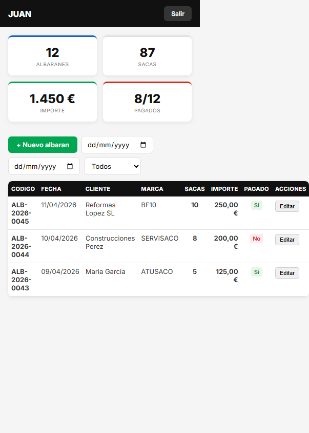
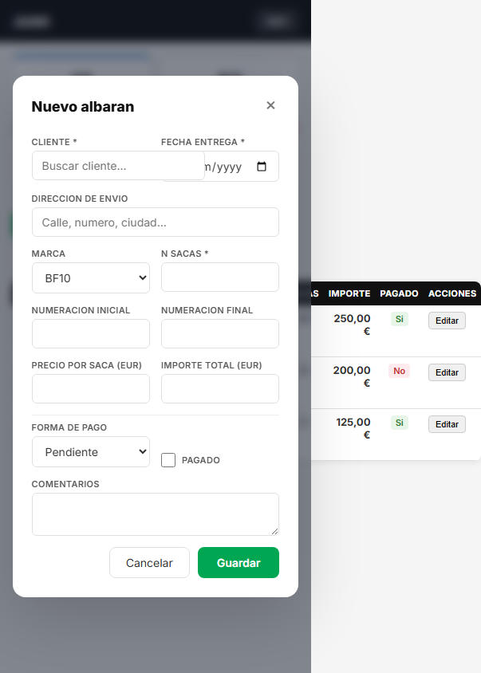

Guia de uso de la app de gestion de albaranes
ServisacoAl entrar en la app veras tu panel con las estadisticas del periodo seleccionado y la lista de albaranes.

| Tarjeta | Que muestra |
|---|---|
| Albaranes | Numero total de albaranes en el periodo filtrado |
| Sacas | Total de sacas entregadas |
| Importe | Suma total en euros de todos los albaranes |
| Pagados | Proporcion de albaranes pagados vs total (ej: 8/12) |
Encima de la tabla tienes filtros para acotar la vista:
| Filtro | Funcion |
|---|---|
| Fecha desde/hasta | Filtra albaranes por rango de fechas de entrega |
| Estado de pago | Filtra por: Todos, Pagados o Pendientes |
La tabla muestra: Codigo, Fecha, Cliente, Marca, Sacas, Importe, Pagado (Si/No) y Acciones (Editar / Eliminar).

| Campo | Descripcion | Obligatorio |
|---|---|---|
| Cliente | Escribe el nombre. Aparece un desplegable con clientes existentes. Si no existe, se crea automaticamente. | Si |
| Fecha entrega | Fecha en que se entregan las sacas. | Si |
| Direccion de envio | Direccion de entrega de las sacas. | No |
| Marca | Marca de las sacas (BF10, Servisaco, Atusaco, etc.). | No |
| N sacas | Numero de sacas entregadas. | Si |
| Numeracion inicial/final | Rango de numeracion de las sacas (si aplica). | No |
| Precio por saca | Precio unitario. El importe total se calcula automaticamente. | No |
| Importe total | Se calcula automaticamente (sacas x precio), pero puedes ajustarlo. | No |
| Forma de pago | Pendiente, Efectivo, Tarjeta o Transferencia. | No |
| Pagado | Marca esta casilla si el cliente ya ha pagado. | No |
| Comentarios | Notas adicionales sobre la entrega. | No |
Edita el albaran, marca la casilla Pagado, selecciona la forma de pago y guarda. El indicador cambiara de No a Si.
Pulsa Eliminar en la columna Acciones. Se pedira confirmacion antes de borrar.